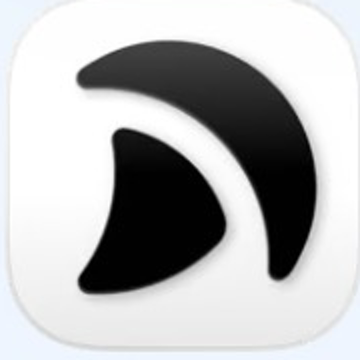

7 月 4-5 日 AI 数字员工工作坊
用 AI 打造
企业家第二大脑.
好的上下文，会让 AI 越来越懂你、懂业务、懂标准。
Day 1认知与第二大脑
Day 2数字员工雏形
30 天线上陪跑与迭代
今天的路线 · 从 AI 拐点到组织杠杆
分享主轴
一条路径
先让 AI 懂你，
再带组织会用 AI
从看见拐点，到个人第二大脑，再到超级团队。
01
看见拐点
02
第二大脑必要性
03
提升输出质量
04
手搓第二大脑
05
从超级个体到超级团队
01
Part One · 看见拐点
看见拐点
AI 已经进入数字世界的工作现场。
阶段判断 · 数字世界与具身世界正在分化
数字世界的 AI 已经过了临界点
Sources: Stanford HAI AI Index 2026; AI Index Technical Performance chapter.
案例：给老公的生日礼物
为什么很多人还没感到变化
大多数人的 AI 体验，还停在聊天框
真正的变化：读文件、调工具、连续执行、交付结果、接受复盘。
左侧体验
聊天框
右侧体验
本地智能体
01 · 记忆沉淀
上下文不沉淀，经验留在聊天记录里，难以复用。
01 · 记忆沉淀
偏好、复盘、有效做法写回本地，下一次可调用。
02 · 资料权限
资料靠复制粘贴，看不到项目目录和历史文件。
02 · 资料权限
直接读取本地文件、项目状态和历史输出。
03 · 行动能力
主要给答案，不能改文件、跑检查、调工具。
03 · 行动能力
能读写文件、调用工具，把任务推进到交付。
04 · 规则对齐
角色设定会被长对话稀释，每次都要重新交代。
04 · 规则对齐
AGENTS.md / instructions.md 固化边界、标准和优先级。
案例：育儿问答
OPENING QUOTE · WILLIAM GIBSON
“
The future is already here.
It’s just not evenly distributed.
未来已经到来，只是尚未均匀分布。
William Gibson Writer · Cyberpunk Pioneer
CODEX SIGNAL
500万+ 周活
非开发者 10%+，增速超过开发者 3 倍。
Source: OpenAI · Codex for knowledge work · 2026.06
工具类比 · 从本地智能体到具体选择
三个本地智能体工具，可以理解成三种 AI 人才市场
按任务难度、人才等级和成本结构分层调用。
数字人才 · 为什么值得认真训练
数字人才，是企业里永不离职的人才
训练成果会留在公司，越用越懂业务，越用越能独立承担任务。
01 · 学习
补课速度很快
新行业、新产品、新流程，给足 Context 就能迅速进入任务。
快
02 · 迭代
不会僵化固化
任务结果、错误原因和有效做法，会变成下一次的起点。
活
03 · 协作
不会争地盘
没有部门墙和职位焦虑，可以围绕最重要的业务目标自由调度。
顺
04 · 沉淀
经验不随人走
数字员工可以切换，但上下文、SOP 和复盘会持续留在公司。
稳
02
Part Two · 第二大脑
第二大脑
高手来了，先让他真正懂你。
高端人才 · 能力强不等于马上懂公司
再高端的人才，也要磨合后才用得顺手
人才市场解决能力供给，第二大脑解决上下文和默契。
入职培训
培训很快，磨合很慢
流程、工具、权限可以很快讲完；判断、口味和边界要靠长期共事。
培训：知道怎么开始干
磨合：知道什么叫做好
第二大脑：把磨合变成可调用 Context
SubAgent 入职示意
同一套上下文包，分发给多个数字员工并发工作。
第二大脑
业务 Context 包
老板判断、历史案例、风格偏好、价值边界和 Eval。
→
主 Agent
拆解任务
把目标拆成可并发、可验收的小任务。
→
SubAgent 01调研
SubAgent 02执行
SubAgent 03QA
结果、错误和复盘再写回第二大脑
企业家第二大脑 · 连接老板判断与高端 AI 人才
第二大脑，是企业家和高端 AI 人才之间的脑机接口
它把人的隐性判断，转成 AI 能高速检索、复盘、调用的长期 Context。
01
输入：企业家的隐性判断
客户能不能接、产品怎么取舍、文案像不像你、什么钱不能赚。
02
转译：变成 AI 可调用 Context
第二大脑把长期磨合沉淀为可检索、可复盘、可更新的工作背景。
03
调用：高端 AI 人才快速入职
拿到上下文、边界和 Eval 后，数字员工直接进入高质量协作。
人和人
十几个 bit/s
靠说、写、听、读慢慢转码，磨合周期很长。
AI 和 AI
上亿 bit/s
向量、参数和高维空间，让检索与迭代高速发生。
第二大脑 · 归你所有
第二大脑放在本地，换工具才不掉一层肉
工具只是接口，长期 Context 必须留在你自己的本地系统里。
本地资产
AI 易读、易索引、可迁移
闪念、历史资料、项目过程、复盘和 SOP，都沉淀在自己的文件系统。
Codex
Hermes
Claude Code
未来工具
01
资产归你，不归平台
第二大脑沉淀在本地，不被某一个第三方工具锁住。
02
工具可以随时升级
今天接 Codex，明天接 Hermes，未来出现更强工具，也读同一套上下文。
03
AI 员工可以无缝交接
一个 AI 员工离开，另一个接上；公司的经验、边界和做法还在。
组织预演 · Welcome to the future
未来组织，会由大量数字员工和少量人类员工协作
现在正是训练数字员工入职公司的窗口期。它们不会离职，会在真实业务碰撞里持续进化。
Welcome to the future.
数字员工承担高频执行、资料处理、流程推进
人类员工负责方向、判断、关系与关键创造
第二大脑成为人和数字员工共享的长期上下文
03
Part Three · 提升输出质量
提升输出质量
先学会管理上下文，再开始构建第二大脑。
Context Engineering 的实际动作
输出质量，要靠工作流设计
把高质量上下文、真实资料、工具权限、硬边界和反馈循环组合起来，模型才会稳定变好。
01明确任务
目标、边界、输入、输出和验收标准先说清楚。
02清理上下文
拆线程、保留信号、移除噪音，把重点放到前面。
03接入资料
用本地文件、检索、API 和真实数据补足证据。
04硬化规则
关键风险进入 Hook、脚本、权限、测试和 validator。
05复盘写回
错误进入 AGENTS、Skill、测试、Eval 或第二大脑。
LLM 原理 · 上下文决定输出质量
大模型运行原理：在上下文判断下一步
Context Engineering，也就是上下文管理：让 AI 在正确背景下工作，输出质量会立刻上一个台阶。
01 · 找信号
模型会在上下文里寻找相关信号
目标、资料、规则、案例、工具结果，都会成为它判断下一步的依据。
02 · 分权重
位置和内容会影响注意力分配
越清晰、越相关、越靠近当前任务的信息，越容易影响模型的输出。
03 · 预测下一步
模型会判断最可能的下一步是什么
下一段文字、下一次工具调用、下一步行动，本质上都受上下文牵引。
Context Window · AI 的短期工作台
上下文包含不止那一句话
本地智能体看到的是一整套工作现场：任务、规则、文件、工具结果、检索材料、权限边界和执行记录。
本地智能体 / Codex
进入窗口的内容，都会影响输出
上下文远远不止一句 prompt。它更像 AI 员工进公司时拿到的桌面、资料室、制度、权限、工具和现场反馈。
越相关，越靠近当前任务，权重越高
越混乱、越冲突，越容易稀释重点
上下文管理，就是管理 AI 的工作现场
01 · 当前任务Prompt / 目标
你刚刚交代的任务、边界、口吻、验收标准。
02 · 长期规则AGENTS.md 链
全局、项目、子目录里的协作规则和偏好。
03 · 按需能力Skill / 工作流
被选中的技能说明、步骤、模板和检验标准。
04 · 本地资料文件 / 知识库
Markdown、代码、表格、图片、历史项目和文档。
05 · 当前改动Diff / 分支
正在修改的文件、未提交变更、版本状态。
06 · 检索结果搜索 / 索引
rg、向量召回、网页搜索、文档检索返回的信息。
07 · 工具输出终端 / 测试
命令结果、报错堆栈、构建日志、QA 反馈。
08 · 浏览现场页面 / 截图
浏览器状态、DOM、截图、网络返回和视觉检查。
09 · 外部接口API / MCP
数据库、连接器、远程服务和工具 schema。
10 · 工作区状态CWD / 文件树
当前目录、项目结构、可见资源和运行环境。
11 · 权限边界沙箱 / 审批
哪些文件可读写、哪些命令需要确认、网络权限。
12 · 会话状态历史 / 计划
前文摘要、任务计划、交接信息和用户最新反馈。
输出质量 · 上下文管理失败
输出不稳，常常是上下文没管好
模型会基于窗口里的信息工作；当背景、重点和规则没有被组织好，能力再强也容易跑偏。
01
关键信息缺席
背景、目标、限制和验收标准没进入窗口，模型只能按通用经验处理。
02
上下文稀释
对话越长、主题越杂，早期要求、关键事实和角色设定越容易被埋掉。
03
检索与压缩损失
超窗口、摘要、检索命中不准，都会让重要信息丢失或变形。
04
软约束失效
Prompt、MD、Skill 都是语义约束；任务复杂或上下文冲突时，仍可能不执行。
Sources: Lost in the Middle; OpenAI Codex docs; 预测大脑与机器契约闪念.
机器契约 · 软硬分层
写给 AI 的规则，约束力并不一样
有些规则只是提醒它“尽量这样做”，有些规则可以让系统在关键节点直接拦截、验证或拒绝执行。
古典机器契约 · 更硬
系统能直接执行
约束强度：强 → 弱
01 平台硬边界
02 外部硬门禁
03 Hook
04 脚本
神经系统契约 · 更软
模型会尽量理解
执行权重：高 → 低
01 Skill
02 系统级 MD
03 项目级 MD
04 当前 Prompt
上下文管理工具 · 先分清层级
先分清：谁收口，谁干活，哪里开新现场
Agent、Sub-agent、Branch、Worktree 是四个不同层级，不要混成同一种“员工”。
01
Agent
主线负责人
承接用户目标，读取主要上下文，拆任务、调工具、整合结果，最后对交付负责。
负责：判断与收口
02
Sub-agent
具体干活的人
被派去处理一个边界清楚的子任务，在自己的上下文里查资料、跑流程，再交回摘要。
适合：调研、审计、日志分析
03
Branch
方案分叉
同一个目标开出不同方向，方便比较方案、保留版本，也方便失败后回退。
适合：多路线探索
04
Worktree
独立施工现场
同一个项目开出独立目录，让不同线程并行修改文件，尽量避免互相踩现场。
适合：并行施工
Sources: OpenAI Codex Subagents / Worktrees; Claude Code Subagents.
AI 员工边界 · 逆向原则
新开一个 Agent，先看四个考量
数字员工的边界，主要看上下文是否该分开、任务能否并发、结果是否要审计、算力怎样分层。
01
隔离上下文
资料很长、主题很杂、权限不同，就让新 Agent 单独处理，主线只接收结论、证据和风险。
02
并发推进
调研、方案、测试、竞品扫描可以同时跑，一个方向一个 Agent，最后由主 Agent 收口。
03
独立审计
事实、代码、安全和高风险交付，让另一个 Agent 检查；最好跨模型审计，比如 Claude Code 产出，Codex 审计。
04
算力优化
强模型负责目标、判断和验收；低成本或本地模型处理扫描、整理和敏感一线数据。
Sources: OpenAI Codex Subagents / Worktrees; Claude Code Subagents; Anthropic context engineering.
04
Part Four · 手搓第二大脑方法论
手搓第二大脑方法论
输入、加工、Loop，三步走。
4.1
Part Four · 第一件事
输入
把过去搬回来，让现在自动沉淀，让未来直接长在本地。
旧数据自动沉淀AI 输入法AI 原生
输入 · 把过去搬回来
旧数据：历史数据，尽可能都“献祭”给第二大脑
这一页只讲输入：先把散落在第三方平台里的材料牵引回来，让第二大脑先接住。
聊天与私域
微信 / 社群 / 客户对话
真实判断、客户语气、合作边界。
会议与访谈
录音 / 纪要 / 转写
决策过程、争议点、行动项。
旧知识库
印象笔记 / Notion / 飞书
过去的想法、资料、课程和复盘。
项目沉淀
旧方案 / 网盘 / 邮件
已经验证过的做法、素材和交付物。
业务数据
CRM / 表格 / 订单
客户、线索、成交和运营痕迹。
个人素材
闪念 / 收藏 / 草稿
观点、故事、选题和判断偏好。
先献祭，后整理
本地第二大脑
先接住
旧数据
不要让旧平台继续垄断你的长期上下文。
尽量全量搬回
原始材料保留
下一层再存储
输入 · 新数据产生
新数据：减少甚至杜绝人工搬运
每天新产生的数据仍会留在第三方平台里，关键是让它自动回流到第二大脑。
01 · API 接口
能接 API，先接 API
会议、文档、CRM、订单和客服系统，只要有开放接口，就让数据自动同步回来。
02 · CLI 接口
能命令化，就脚本化
如果平台支持命令行、批量导出或 Webhook，就把重复点击变成定时任务。
03 · 定时脚本
没接口，也要想办法拉回
在权限和合规边界内，用网页抓取或浏览器自动化，把新数据按周期带回本地。
第三方平台 → API / CLI / 定时脚本 → 本地第二大脑
输入 · 增加信息源
新数据：借助 AI 的力量，放大信息源
AI 输入法把原本流失的念头、判断、场景和素材，变成可沉淀的数据。

Typeless
AI 语音输入
输入速度4-5x少打字，多口述
×
扩展场景2-3x走路、通勤、临睡前都能输入
=
总输入带宽10x+更多想法进入系统
输入 · 思维也会被改造
AI 输入法的附赠好处——打断思维反刍，将思维客体化
语音输入会把内在循环变成外部对象，AI 才能追问、整理、保存和复用。
01 · 重点
打断
思维反刍
念头一说出来，就从脑内循环变成外部对象，不再反复消耗注意力。
02思维客体化
把“我在想什么”变成可看、可改、可追问的文本。
03情绪客体化
情绪被命名之后，和“我”拉开距离，更容易被处理。
04认知卸载
把未成形的判断先放到外部系统，降低大脑缓存压力。
输入 · 数据保存形态
新数据：尽量用 AI 原生的方式生成
每多一个封闭平台、复杂格式和人工搬运环节，AI 的调用成本都会升高。
低复用形态
平台和文件把经验锁住
- Word、PDF、Excel、PPT 需要再次解析。
- 音视频、图片和截图如果没有文本入口，很难被快速调用。
- 封闭平台每次迁移，都可能掉一层肉。
AI 原生形态
生产过程就沉淀为资产
- 用 Markdown 保存想法、复盘和会议。
- 用 HTML 承载 PPT、网页和交互稿。
- 用 CSV / JSON 保存结构化数据。
- 让 AI 可以搜索、diff、修改、验证。
长期资产不要住在第三方工具里
第三方软件已死
未来很多软件会变成即用即抛的界面层。它们可能卡住数据产生、保存格式和获取权限；能不用第三方软件，就尽量不用。
4.2
Part Four · 第二件事
加工
把资料变成 AI 能读取、检索、引用和复用的形态。
格式转换说明书索引
加工 · 第一步处理
第一步：先把资料变成 AI 能读的格式
原始材料继续保留，同时生成一份 AI 易读副本，让资料可以被搜索、引用和复用。
原始材料
先保留
微信导出、PDF、录音、截图、旧文件和平台数据，不覆盖、不丢弃，作为事实源头。
文本类
转 Markdown
闪念、会议、访谈、复盘、文章摘要和判断记录，优先转成可读、可检索的文本。
数据类
转 CSV / JSON
客户、订单、指标、任务状态和元数据，用稳定结构保存，方便 AI 读取和计算。
加工 · 第二步处理
第二步：让 AI 生成说明书和索引
资料进来后，不要靠人手工规划完整架构；先让 AI 读一遍，给出第一版入口和地图。
说明书给 AI 的说明书
写清目录结构、重要入口、命名规则、禁区、输出格式和验收标准。
典型形态：AGENTS.md / instructions.md。
索引AI 的索引
建立项目、人物、会议、素材、复盘和主题入口，让 AI 知道先去哪里找。
典型形态：MOC、项目索引、会议索引。
起草方式先交给 AI 出一版
让 AI 根据现有资料提出说明书和索引方案，人确认后再写回系统。
目标：先有可用入口，再逐步迭代。
目标：AI 接到问题时，知道先读哪份说明书，再沿哪个索引找材料。
加工 · 概念补充
另外一些有用的概念
现阶段不用深入展开，先知道它们分别解决什么问题。
给自己看的工作台Obsidian
从第一天就可以用来浏览、编辑、链接和维护本地 Markdown。
价值：让人能长期维护第二大脑。
几百到几千篇 Markdown脚本索引
当文件开始变多，就让 AI 或脚本自动生成项目、会议、人物和主题索引。
价值：减少“我记得有，但不知道在哪”。
几千到几万段文本 chunk向量索引
当关键词搜不到语义相近内容，再用 Embeddings 做语义召回，并回到原文确认。
价值：解决同一件事有很多说法的问题。
判断信号：你经常记得“好像写过”，但用关键词和目录找不到。
4.3
Part Four · 第三件事
Loop
让第二大脑和项目系统在反馈里自进化。
系统层项目层数据回流
Loop · 系统层
系统层 Loop：第二大脑每天变聪明
每天沉淀，按周压缩，把经验写回 Skill、agent.md、索引和 Memory。
01
每日捕捉
任务里哪里卡住、哪里反复修改、哪些资料值得沉淀。
02
复盘偏差
找出犯错原因、价值判断偏差和可以做得更好的地方。
03
写回系统
沉淀到 Skill、agent.md、MOC、脚本、检查项和 Memory。
04
每周压缩
把每天沉淀抽象成更短规则，避免上下文越堆越长。
05
下一轮读取
新任务自动调用更新后的规则、索引和个人画像。
Loop · 项目层
项目层 Loop：人定目标，AI 跑策略
Mission、Vision、Value 由人把关，执行路径让 AI 并行赛马，用真实数据收口。
人来定义
Mission / Vision / Value
目标是什么，成功长什么样，哪些价值边界不能碰，由人负责。
AI 来探索
多线程赛马
同一个目标，让不同策略、不同路径、不同假设并行跑起来。
数据来筛选
收口到指标
用播放、转化、收益、回撤、用户反馈等真实数据淘汰策略。
Loop · 吞吐量和数据回流
70% × 10 = 700%：AI 先赢在吞吐量
一开始单条未必超过专家，但更高频的真实反馈，会让系统进化得更快。
一个上午
1 条 100%
vs 10 条 70%
AI 先蒸馏你的能力，单条可能只有 70%；但它能在同样时间里跑出更多样本，总实验量先变成 700%。
10x产出密度
从一个月一条，到两天一条，平台曝光和测试机会都会增加。
Data数据回流
选题、封面、完播、评论、转发、私信和成交都会反哺系统。
Loop策略进化
有效策略继续放大，无效策略被淘汰，每轮都写回第二大脑。
100%+单条变强
一开始接受 70%，但长期可能逼近甚至超过原来的专家水平。
第二大脑建好后 · 工作习惯
AI 时代老板的新工作习惯
像领导公司一样放权：你负责方向、边界和验收，AI 先跑出第一版。
放权
AI First 工作动线
调研、起草、比较、拆解、复盘、生成方案，先交给 AI 跑一遍。人从执行层抽出来，保留关键判断。
人才密度
允许下属在单点上比你强
AI 人才在研究、写作、编程、设计或分析上超过你，是好事。这说明你的组织已经拥有更高的人才密度。
定方向
说明 Mission、Vision、Value 和验收标准。
05
Part Five · 从超级个体到超级团队
从超级个体
到超级团队
创始人先有体感，组织才知道往哪里复制。
从超级个体到超级团队 · 先定义超级个体
超级个体的四个结构性特征
借助 AI，一个人达到过去小团队才能达到的产出规模和影响半径。
1AI First 工作动线
把 AI 放进完整工作流，先让 AI 跑，再在人类判断上修正和收口。
2能力边界量级跃迁
产出规模显著放大，一个人能跑通从想法到交付的完整链路。
3主动性极强
不等待组织安排，主动探索 AI 能力边界，持续扩展自己的能力圈。
4影响力溢出
工作方式和成果被看见，带动周围的人变快，价值不只停在个人产能。
Source: 腾讯研究院《超级个体时代｜腾讯研究院3万字报告》，第一章 1.1。
吃到 AI 红利的公司，
创始人几乎都是超级个体.
他不必天天泡在工具里，但必须被 AI 惊艳到过，知道边界，才推得动组织变革。
超级团队涌现 · 四条路径
最可控的入口，是创始人先成为超级个体
A、B、C 都需要高密度人才或成熟机制；创始人没有体感，就很难筛选、培养和复制。
不可控
路径 A
自下而上自发涌现
超级个体彼此看见、自然聚合；前提是组织里本来就有极高的人才密度。
难照抄
路径 B
组织筛选培育
筛选、集中训练、放回团队；难点是每家公司都要知道自己该筛什么。
慢变量
路径 C
氛围营造浸泡
午餐会、每日分享、Demo day 持续浸泡；效果依赖时间和可见性。
最可控
路径 D
创始人驱动示范
创始人先被 AI 惊艳到，亲自跑出结果，再把标准和机制扩散到组织。
为什么必须先有体感
先知道 AI 的边界，才知道组织该怎么变
能吃到 AI 红利的公司，创始人通常先理解 AI 能做什么、不能做什么，再去重建筛选机制和工作方式。
体感
标准
筛选
复制
没有体感，容易长出“AI 影子”
有人用 AI 快速干完分内活，却不让组织看见；省下来的时间流向摸鱼或私活，个体变快，组织没有升级。
Reference: 腾讯研究院《超级个体时代｜腾讯研究院3万字报告》，2.3 四种涌现路径。
从超级个体到超级团队 · 组织会往哪里变
组织会变，创始人必须先有体感
AI 不只是提效工具，它会重排人才、改写分工，并把数字员工带进组织协作。
01 · 人才标尺
重排序列，拉大方差
学历、资历和职级降权；学习速度、判断力、系统思维和 AI 驾驭力升权。
02 · 个体觉醒
岗位边界变薄
开发者、产品、运营、创始人都可能被 AI 放大，新的关键人才会从意想不到的位置冒出来。
03 · 分工协作
从职能分工到能力放大
组织少看“属于哪个部门”，多看“这个人加上 AI 能覆盖哪条业务链”。
04 · 协作主体
人类员工 + 数字员工
未来交付由人、Agent、数据和工具共同完成；权限、上下文、Eval 和复盘成为新管理底座。
创始人的任务
先有体感，
再设计组织
如果创始人没有体感，觉醒的超级个体要么变成“AI 影子”，要么流向更能放大他的组织。企业家的第二大脑，是获得体感、沉淀标准、复制能力的起点。
Reference: 腾讯研究院《超级个体时代｜腾讯研究院3万字报告》，1.2 / 2.3 / 4.3。
第二大脑，
让 AI 越来越懂你.
先让 AI 懂你，组织才知道往哪里变